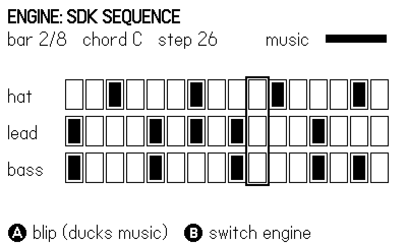
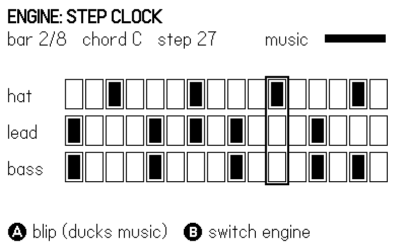
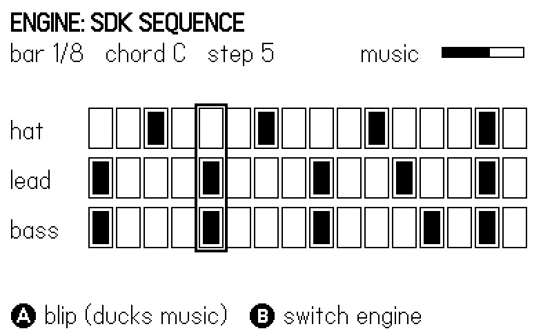

13 Music: Sequences and Step Clocks
There are two respectable ways to make music on a Playdate in Lua, and this chapter builds the same song with both so you can judge them side by side. The first is the SDK’s own sequencer — playdate.sound.sequence, track, and instrument — a small MIDI engine that runs your notes on the audio thread, independent of your frame rate. The second is the house method from the shipped games: a clock-driven step sequencer, about twenty lines of Lua that accumulate elapsed time and fire a step every time the clock crosses a boundary. It cannot drift, and — decisively for rhythm gameplay — your game logic can read the same clock the music plays from.
The example is one eight-bar chiptune loop (a I–V–vi–IV progression in C: bass, lead, and a noise hi-hat) implemented twice over the same data. The B button swaps engines mid-run; the screen shows a 16-column step grid with a moving playhead and the name of the engine currently playing, which is how a silent page gets to show you music: the figures capture the grid under each engine. The A button plays a gameplay blip and ducks the music under it, using the channel-volume knob from Chapter 12.
Along the way: why setTempo does not take BPM, why note lengths are in steps rather than seconds, when to stream audio from disk with fileplayer instead of synthesizing it, and why “accumulate and fire” beats every timer-based scheduling scheme you will be tempted to write.
13.1 The song is data; the engine is a choice
Both engines in this chapter read the same three arrays. That is the design decision to copy even if you copy nothing else: keep the music out of the machinery, and you can swap machinery freely. The song itself is small enough to read in one screen:
Song.bpm = 112
Song.steps = 128 -- 8 bars x 16 sixteenth-note steps
-- Two bars per chord: C, G, Am, F. Roots are MIDI notes; tones are
-- the chord notes the lead melody is allowed to sing.
Song.chords = {
{ name = "C", root = 36, tones = { 72, 76, 79 } },
{ name = "G", root = 43, tones = { 71, 74, 79 } },
{ name = "Am", root = 45, tones = { 69, 72, 76 } },
{ name = "F", root = 41, tones = { 69, 72, 77 } },
}
-- One bar of rhythm per voice. Bass plays the root (1) or the
-- fifth (5); the lead indexes into the chord tones (0 = rest);
-- the hat clicks on the offbeats.
local BASS = { 1,0,0,0, 1,0,0,0, 1,0,0,0, 1,0,5,0 }
local LEAD_A = { 1,0,0,0, 2,0,0,0, 3,0,0,2, 0,0,1,0 }
local LEAD_B = { 3,0,0,0, 2,0,3,0, 1,0,0,0, 2,0,0,0 }
local HAT = { 0,0,1,0, 0,0,1,0, 0,0,1,0, 0,0,1,0 }Eight bars, two per chord, at 112 BPM. The compact per-bar patterns expand into flat 128-entry arrays of MIDI note numbers, with 0 meaning rest — the same convention playNote itself uses for note-off (Chapter 12):
-- Expand the compact patterns into flat per-step arrays of MIDI
-- notes (0 = rest). Everything downstream reads only these.
Song.bass, Song.lead, Song.hat = {}, {}, {}
for bar = 0, 7 do
local ch = Song.chords[bar // 2 + 1]
local leadPat = (bar % 2 == 0) and LEAD_A or LEAD_B
for i = 1, 16 do
local s = bar * 16 + i
local b = BASS[i]
if b == 0 then Song.bass[s] = 0
elseif b == 5 then Song.bass[s] = ch.root + 7
else Song.bass[s] = ch.root end
local l = leadPat[i]
Song.lead[s] = (l == 0) and 0 or ch.tones[l]
Song.hat[s] = (HAT[i] == 0) and 0 or 96
end
end
function Song.stepsPerSecond()
return Song.bpm / 60 * 4 -- four sixteenths per beat
end
function Song.midihz(n)
return 440 * 2 ^ ((n - 69) / 12)
endTwo helpers at the bottom do the unit conversions both engines need. Song.stepsPerSecond() turns BPM into steps per second: at 112 BPM there are 112 quarter notes a minute, each holding four sixteenth-note steps, so 112 / 60 * 4 ≈ 7.47 steps per second. And Song.midihz(n) is the standard equal-temperament formula — 440 Hz at MIDI note 69 (A4), doubling every 12 semitones. Molt carries the identical function under the name f:
-- molt/source/music.lua:12-14
local function f(n) -- midi -> Hz
return 440 * 2 ^ ((n - 69) / 12)
endStoring MIDI numbers instead of Hertz keeps the data musical — you can see that 72 → 76 → 79 is a C-major arpeggio — and postpones floating point until the moment a note is actually played.
The progression is I–V–vi–IV (C, G, Am, F), pop music’s load-bearing wall. The craft is mostly restraint: the bass plays roots on the beat and offers the fifth only at the bar’s tail; the lead sings chord tones exclusively, alternating two shapes so bars feel related but not identical; the hat clicks the offbeats. Melody built from chord tones cannot hit a wrong note — a useful property when the composer is a programmer.
13.2 Engine one: the SDK sequencer
The SDK way is declarative: you load every note into tracks up front, wire each track to an instrument, and hand the whole thing to the audio engine, which plays it in its own thread regardless of what your update loop does. Four objects cooperate:
playdate.sound.sequence— the song: tempo, loop range, and a list of tracks.sequence.new([midi_path])creates one, or loads an entire MIDI file if you pass a path.playdate.sound.track— one part (our bass, lead, hat): a list of note events plus the instrument that renders them.playdate.sound.instrument— a wrapper that turns one or more synths into a polyphonic, sequencer-driven voice.playdate.sound.synth— exactly the synths of Chapter 12.
Here is the whole build, three tracks from the three arrays:
function SeqEngine.build(channel)
local seq = snd.sequence.new()
seq:setTempo(Song.stepsPerSecond()) -- steps/sec, NOT bpm
local function addTrack(notes, synth, vel, len)
local track = snd.track.new()
local inst = snd.instrument.new(synth)
channel:addSource(inst)
track:setInstrument(inst)
for s = 1, Song.steps do
if notes[s] ~= 0 then
track:addNote(s, notes[s], len, vel)
end
end
seq:addTrack(track)
end
addTrack(Song.bass,
patch(snd.kWaveTriangle, .002, .06, .6, .10, .50), 1, 2)
addTrack(Song.lead,
patch(snd.kWaveSquare, .002, .05, .5, .08, .28), 1, 2)
addTrack(Song.hat,
patch(snd.kWaveNoise, .001, .03, .1, .03, .50), 0.5, 1)
seq:setLoops(1, Song.steps, 0) -- loopCount 0 = forever
SeqEngine.seq = seq
endReading it from the inside out:
track:addNote(step, note, length, [velocity]) places one note. step is the sequencer position, 1-based — the SDK’s own Drum Machine example writes step 1 as the downbeat and loops setLoops(1, 16, 0), and this example follows it. note is a MIDI note number or a name string like "Db3". length is in steps, not seconds — it follows the sequence’s tempo, so the same track data played faster produces proportionally shorter notes, exactly as sheet music would. velocity (default 1.0) scales the note’s volume; the hat uses 0.5 to sit behind the melody. For bulk work there is track:setNotes(list), which takes an array of {step=, note=, length=, velocity=} tables, and getNotes() / clearNotes() / removeNote(step, note) to edit live.
instrument.new(synth) wraps a synth as a track’s voice, set with track:setInstrument(inst). An instrument with one synth is monophonic, like the synth itself; give it several voices with instrument:addVoice(synth) and the sequencer distributes overlapping notes among them — that is how a chord track works (track:getPolyphony() reports what a track needs). addVoice can also map voices to key ranges — addVoice(v, note, rangeend, transpose) assigns a synth to the notes note..rangeend, the foundation of drum-kit instruments where each MIDI note is a different drum. Instruments are sound sources, so channel:addSource(inst) routes them like any synth; ours join the music channel so they can be ducked later. Our melody keeps single-voice instruments honest by never overlapping more than one lead note (the tightest spacing is two steps, matching the note length of 2).
seq:setTempo(Song.stepsPerSecond()) sets playback speed, and seq:setLoops(1, Song.steps, 0) loops the full range forever (a loopCount of 0 means endless; there is also the one-argument form setLoops(loopCount) covering the whole sequence).
sequence:setTempo(stepsPerSecond) is the most common trap in this API. It takes steps per second, where a step is whatever your grid resolution is — sixteenth notes here. Feed it 112 intending 112 BPM with sixteenth-note steps and your song plays fifteen times too fast: a comedy on first listen, a head-scratcher in a smoke log. Keep one conversion function (Song.stepsPerSecond) and call it everywhere a tempo is needed; both engines here share it.
Running the sequence is trivial, and the example wraps the few calls it needs behind a start/stop/step interface so the two engines are interchangeable from the main loop’s point of view:
function SeqEngine.start()
SeqEngine.seq:play()
end
function SeqEngine.stop()
SeqEngine.seq:stop()
SeqEngine.seq:allNotesOff()
end
-- Current step, wrapped into the loop: always 1..Song.steps.
function SeqEngine.step()
local s = math.floor(SeqEngine.seq:getCurrentStep())
return (s - 1) % Song.steps + 1
end
function SeqEngine.seek(s)
SeqEngine.seq:goToStep(s)
endsequence:play([finishCallback]) starts it (the callback fires when a non-looping sequence ends or stop() is called); sequence:stop() halts it, and allNotesOff() silences anything still ringing — without it, a note whose release tail is long can hang over the engine swap. getCurrentStep() reports the playhead for the grid display, and goToStep(step, [play]) moves it; the figure script uses that to pin the playhead to a known step so the captured figures are deterministic. isPlaying(), getLength(), and getTrackAtIndex(n) round out the inspection API.
Figure 13.1 shows the result: the grid mid-loop under the SDK engine, playhead boxed on the current column.

playdate.sound.sequence.new("song.mid") loads a standard MIDI file into tracks, which you then bind to instruments — getTrackCount() tells you how many parts arrived, and getTrackAtIndex(n):setInstrument(...) gives each one a voice. If your music comes from a composer with a DAW rather than from tables in code, this is your import path: they ship .mid files, you ship synth patches. One of the case-study projects, midiplayer, is an entire General-MIDI-flavored player grown from exactly this entry point.
13.3 Engine two: the step clock
The SDK sequencer is fine machinery, and the games do not use it. Every shipped game with music — molt’s six zone motifs, Weasel War Dance’s entire rhythm-game score, Squirl, AnEnemy — runs the same twenty-line pattern instead: a step clock. Accumulate elapsed game time; divide by the step duration; fire every step boundary you have crossed. Weasel War Dance’s conductor is the canonical statement, and its update is nine lines:
-- weaselwardance/source/conductor.lua:85-93
function Conductor.update(dt)
if not Conductor.playing then return end
Conductor.t = Conductor.t + dt
local step = math.floor(Conductor.t / Conductor.stepDur)
while Conductor.lastStep < step do
Conductor.lastStep = Conductor.lastStep + 1
trigger(Conductor.lastStep)
end
endStudy the while loop, because it is the entire trick. The current step is computed from total elapsed time — floor(t / stepDur) — not by counting frames or chaining timers. If a frame runs long and the clock crosses two boundaries, the loop fires both steps, in order, this frame. Nothing accumulates rounding error, because nothing is incremental: step number is a pure function of t. Timer-based scheduling (“play a note, set a 133 ms timer, repeat”) drifts by a little every callback and by a lot every dropped frame; frame counting breaks the moment the frame rate hiccups. The accumulate-and-fire loop is immune to both, which is why it earned the description zero drift in the game notes.
The example’s version is the same loop wearing this book’s names, plus start/stop/seek to match the sequence engine’s interface:
function StepClock.start()
StepClock.t = 0
StepClock.lastStep = -1
StepClock.playing = true
end
function StepClock.stop()
StepClock.playing = false
end
function StepClock.update(dt)
if not StepClock.playing then return end
StepClock.t = StepClock.t + dt
local step = math.floor(StepClock.t / stepDur)
while StepClock.lastStep < step do
StepClock.lastStep = StepClock.lastStep + 1
trigger(StepClock.lastStep % Song.steps + 1)
end
endtrigger is where the arrays turn into sound — three playNote calls on the synths of Chapter 12, with note lengths phrased as multiples of the step duration (1.8 steps of bass legato, a short half-step tick of hat):
local function trigger(s) -- s is a song step, 1..Song.steps
local b = Song.bass[s]
if b ~= 0 then
bass:playNote(Song.midihz(b), 0.5, stepDur * 1.8)
end
local l = Song.lead[s]
if l ~= 0 then
lead:playNote(Song.midihz(l), 0.28, stepDur * 1.6)
end
local h = Song.hat[s]
if h ~= 0 then
hat:playNote(Song.midihz(h), 0.25, stepDur * 0.5)
end
if s % 16 == 1 then Harness.count("clockBars") end
endMolt’s zone music is the same loop with one variation — it subtracts stepDur from the accumulator instead of keeping absolute time, which also works and wraps the numbers small:
-- molt/source/music.lua:59-73 (excerpt)
function Music.update(dt)
if not cur or not Music.on then return end
local stepDur = 60 / cur.bpm / 4 -- sixteenth notes
clock = clock + dt
while clock >= stepDur do
clock = clock - stepDur
stepI = stepI % 16 + 1
local b = cur.bass[stepI]
if b and b ~= 0 then
bass:playNote(f(b), 0.13, stepDur * 1.8)
end
-- ...lead and pad follow the same test
end
endKeep absolute time (as Weasel and this chapter’s example do) when anything else wants to read the clock; subtract (as molt does) when the music is fire-and-forget. Figure 13.2 shows the step-clock engine holding the same grid — as it should: same data, same picture, different machinery.

13.4 Why the games chose the clock
The sequence engine plays on the audio thread: steady, efficient, and elsewhere. The step clock plays inside playdate.update: every note is triggered by your code, on your clock. That difference decides which one you want.
Choose the step clock when gameplay and music must agree. Weasel War Dance is a rhythm game; its hit judgment is a comparison against Conductor.t — the same accumulator that triggers the notes. Audio and judgment cannot disagree because they are not two clocks; they are one. The conductor even starts t negative to give a count-in bar of clicks, and exposes the beat directly to the renderer:
-- weaselwardance/source/conductor.lua:95-101
-- 1 on the beat decaying to 0, for squash-and-stretch
function Conductor.beatPulse()
if not Conductor.playing then return 0 end
local beatDur = Conductor.stepDur * 4
local ph = (Conductor.t % beatDur) / beatDur
return math.max(0, 1 - ph * 3)
endEvery dancer in that game squashes on the kick because the drawing code asks the music clock what the beat is doing. With the SDK sequencer you can approximate this by polling getCurrentStep(), but the phase within a step is not exposed, and your game clock and the audio clock will disagree by a frame or two — fatal at rhythm-game tolerances, merely untidy elsewhere.
Choose the step clock when the music must react. Molt switches motifs per zone with Music.set(name) — instant, because next step’s notes are read from whatever table cur points at. Boss music at 148 BPM takes effect at the very next step. Mutating a playing SDK sequence means editing track objects while the audio thread reads them; possible, but you are negotiating with a black box.
Choose the SDK sequencer when the music is fixed and long. A three-minute MIDI arrangement with six polyphonic tracks is a data problem, not a loop problem: sequence.new("song.mid"), bind instruments, play(). It costs zero lines of update-loop code and keeps perfect time while your game lags, because the C engine — not your Lua — is doing the counting.
There is one more argument for the clock that is invisible until you test the way this book does (Chapter 18): the step clock runs on DT, so a headless capture run at unthrottled refresh rate plays it faster but identically — bar counters land on the same frames every run. The SDK sequence keeps wall-clock time no matter what the frame rate does, so this chapter’s figure script pins its playhead with goToStep right before each shot. Determinism is a feature you buy by keeping things on the game clock.
13.5 Growing the pattern: sections, count-ins, arrangement
Eight looping bars is a texture; a song has structure. Both engines extend gracefully, and the shipped games show the shapes.
On the step-clock side, Weasel War Dance’s conductor stores each song as named sections — pattern strings with a bar count — and flattens them into one long per-step string at load, letting a four-pattern song fill sixty-four bars without sixty-four bars of data. The load function also hides a lovely trick:
-- weaselwardance/source/conductor.lua:33-43 (excerpt)
function Conductor.load(song)
Conductor.song = song
Conductor.stepDur = 60 / song.bpm / 4
Conductor.drum = Conductor.expand(song, "drum")
Conductor.bass = Conductor.expand(song, "bass")
Conductor.lead = Conductor.expand(song, "lead")
Conductor.total = #Conductor.drum
Conductor.t = -Conductor.stepDur * 16 -- one count-in bar
Conductor.playing = true
endStarting the clock at negative time buys a free count-in: for one bar, trigger sees negative step numbers and plays metronome clicks instead of notes, and the player’s first real beat arrives exactly at t = 0. Every downstream system — judgment windows, the scroll position of the note highway, the beat pulse — is a formula over t, and none of them needs a special case for the intro. That is the deep advantage of owning the clock: musical time becomes a coordinate system the whole game can compute in.
On the SDK side, arrangement tools come built in: tracks can be muted and unmuted live (track:setMuted(flag) — the classic “layers fade in as you progress” mechanic is three unmute calls), sequence:setLoops(startStep, endStep) can pin playback to one section while a menu is open, and track:addControlSignal(s) attaches MIDI-style controller curves for parameter automation if your .mid file carries them. A verse–chorus form is just a longer track list; you pay nothing per note beyond the memory to hold it.
Molt sits between the two: six 16-step motifs, one per zone, on the step clock — and switching zones is Music.set(name), which simply repoints the table the trigger reads. Structure, in the house style, is data selection, not engine features.
13.6 Files: fileplayer and sampleplayer
Synth music weighs nothing and never loads, which is why the house style prefers it. But when you have recorded audio — a licensed track, voice lines, a sound too organic to synthesize — two players handle it, split by one question: does it fit in memory?
playdate.sound.sampleplayer loads the whole file into RAM and plays it on demand: sampleplayer.new(path) then :play(), with setRate, setVolume, playAt(when, ...) for scheduling on the audio clock, and play(0) for endless loops. Use it for short, frequently-fired sounds — it is the recorded-audio sibling of the preloaded synth voice. Loading returns nil plus an error message on failure, so the assert-wrapped load is the idiom.
playdate.sound.fileplayer streams from disk instead: fileplayer.new(path, [buffersize]) reads ahead into a small buffer (settable in seconds) and decodes as it goes — uncompressed, ADPCM, or MP3, with ADPCM the sweet spot of cheap decode and small files. Streaming means a three-minute music track costs kilobytes of RAM instead of megabytes, at the price of disk latency: a setOffset seek stalls until the buffer refills, and a busy frame can underrun the buffer. By default the fileplayer emits a brief silence and recovers; setStopOnUnderrun(true) makes it halt instead, and didUnderrun() tells your telemetry. It also loops (setLoopRange(start, end), play(0)), and setRateMod accepts an LFO for tape-warble effects.
The rule of thumb: music and ambience stream through one fileplayer; effects live in memory (sampleplayer or, in this book’s style, synths). Two streaming fileplayers at once is asking the flash storage for trouble; one is engineered for.
13.7 Ducking: the music channel earns its keep
Chapter 12 promised a payoff for routing all music sources through one playdate.sound.channel. Here it is: when a gameplay sound fires, the game dips the music channel’s volume and lets it swell back, so the effect reads clearly over the bed. The example wires its blip — which lives on the default channel, unducked — to a one-line envelope on the music channel:
local function playBlip()
blip:playNote(1319, 0.5, 0.1)
duck = 1
Harness.count("blips")
end
local function updateDuck()
duck = math.max(0, duck - DT / 0.5) -- recover over 0.5 s
music:setVolume(1 - 0.7 * duck) -- dip to 0.3, ride back
endduck snaps to 1 on every blip and decays linearly over half a second; the music volume rides 1 - 0.7 * duck, so it dips to 30% and recovers. Because both engines’ sources — the three step-clock synths and the three sequence instruments — were added to the same music channel at build time, ducking is engine-agnostic:
-- All music sources live on one channel, so a single volume knob
-- can duck them under gameplay SFX. The blip stays on the default
-- global channel at full volume.
local music = snd.channel.new()
SeqEngine.build(music)
StepClock.build(music)
local blip = snd.synth.new(snd.kWaveSquare)
blip:setADSR(0.002, 0.03, 0.4, 0.1)Figure 13.3 catches the dip in flight: the meter at the top right shows the music channel at just over half volume, six frames after a blip.

The same knob is your settings screen (“music volume”) and your pause behavior (duck to 0.2 while the menu is up). One channel, many features.
13.8 The A/B switch
The two engines present the same four functions — build, start, stop, step — so swapping is bookkeeping, not surgery:
local function setEngine(name)
if engine == name then return end
if engine == "sequence" then SeqEngine.stop()
else StepClock.stop() end
engine = name
if engine == "sequence" then SeqEngine.start()
else StepClock.start() end
Harness.count("switches")
endThe swap restarts the loop from step 1: position hand-off between engines is possible (goToStep one way, StepClock.seek the other) and the example uses those seeks for its figures, but a musical swap on the bar line is what a real game would ship, and restarting keeps the listing honest about what it does. Note the allNotesOff() inside SeqEngine.stop() — the first version of this example left a lead note’s release tail ringing across the switch, a small lesson in why stop functions should silence, not merely halt.
The grid view reads whichever engine is live through one accessor and draws the current bar’s sixteen columns for all three voices, boxing the playhead column — the figures earlier in the chapter are exactly this code:
local GX, GY = 64, 78 -- grid origin
local CW, CH = 20, 30 -- cell size
local ROWS = {
{ name = "hat", notes = Song.hat },
{ name = "lead", notes = Song.lead },
{ name = "bass", notes = Song.bass },
}
-- Draw the current bar as a 16 x 3 grid, with the playhead boxed
-- around the column both engines report as "now".
local function drawGrid(step)
local bar = (step - 1) // 16 -- 0..7
local col = (step - 1) % 16 + 1
for r, row in ipairs(ROWS) do
local y = GY + (r - 1) * (CH + 6)
gfx.drawText(row.name, 8, y + 8)
for c = 1, 16 do
local x = GX + (c - 1) * CW
gfx.drawRect(x, y, CW - 2, CH)
if row.notes[bar * 16 + c] ~= 0 then
gfx.fillRect(x + 3, y + 3, CW - 8, CH - 6)
end
end
end
local x = GX + (col - 1) * CW
local h = 3 * (CH + 6) - 6
gfx.drawRect(x - 2, GY - 2, CW + 2, h + 4)
gfx.drawRect(x - 3, GY - 3, CW + 4, h + 6)
return bar
endThe figure script switches engines mid-run with a scripted B press at frame 130, seeks, shoots each engine’s grid, and blips twice so the duck path runs under both engines. The heartbeat counters tell the story of a healthy run: switches = 1, blips = 2, and clockBars climbing only after the swap.
13.9 What you know now
- Keep the song as data (per-step arrays of MIDI notes, 0 as rest) and the engine becomes swappable;
440 * 2^((n-69)/12)turns MIDI numbers into Hertz. - The SDK way:
sequence.new()(or.new("song.mid")),track:addNote(step, note, length, velocity)with 1-based steps and lengths in steps,instrument.new(synth)(plusaddVoicefor polyphony and key ranges) as each track’s voice,setTempo(stepsPerSecond)— not BPM — andsetLoops(start, end, 0)to run forever. It keeps time on the audio thread, whatever your frame rate does. - The house way: accumulate
dt, andwhile lastStep < floor(t / stepDur)fire steps. Zero drift by construction, deterministic under the test harness, trivially mutable (molt swaps zone motifs mid-note), and gameplay can read the same clock — Weasel War Dance’s judgment and squash-and-stretch both poll its conductor. - fileplayer streams long audio from disk (ADPCM preferred, watch for underruns); sampleplayer preloads short sounds into RAM; synths cost no assets at all.
- One music channel for all music sources turns volume settings, pause dimming, and SFX ducking into a single
setVolumeknob. - Music that has to last longer than a loop wants a tracker’s shape — patterns plus an order list,
A A B C— and a stinger that remembers the playhead it interrupted. Chapter 25 builds both.
That completes the sound stack: effects that speak (Chapter 12) and music that keeps time. The next part puts both under a game worth scoring — starting with movement, collision, and the physics of a platformer that feels right.